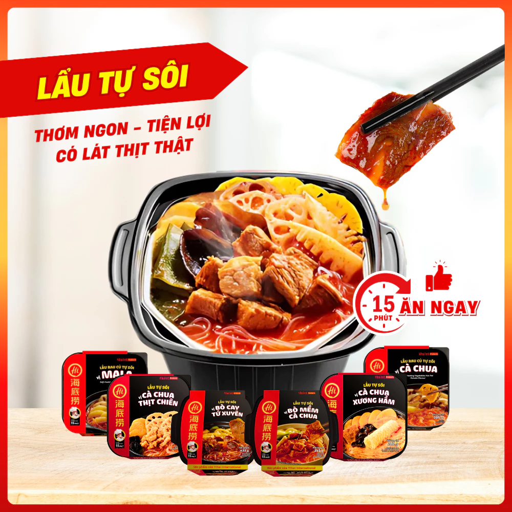

【Lẩu Tự Sôi】Haidilao trùng khánh Việt Nam Tứ Xuyên không cay
SKU: 10700150
145.000₫
Còn hàng
🚚 Miễn phí giao hàng cho đơn từ 300.000₫ – Giao trong 2 giờ
🎁 Lẩu tự sôi tiện lợi, chuẩn vị Trung Hoa
🧴 Mô tả sản phẩm
Tên sp: 【Lẩu Tự Sôi】Haidilao trùng khánh Việt Nam Tứ Xuyên không cay
Sự tiện lợi và hương vị ngon miệng trong từng bữa ăn! Lẩu tự sôi Haidilao mang đến trải nghiệm ẩm thực nhanh chóng, không cần bếp và điện. Dù bạn đang đi làm, picnic, du lịch hay học tập, chỉ cần 15 phút là có ngay một bữa lẩu thơm ngon, chuẩn vị Trung Hoa.
Đa dạng vị ngon để lựa chọn:
- Bò cay Tứ Xuyên
- Cà chua xương hầm
- Bò mềm cà chua
- Cà chua thịt chiên
Chi tiết sản phẩm:
- Mỗi hộp có trọng lượng từ 275–435g, phù hợp với nhiều nhu cầu ăn uống.
- An toàn tuyệt đối, hàng chính hãng Haidilao.
Hướng dẫn sử dụng:
- Mở nắp, lấy khay và các gói nguyên liệu ra.
- Mở các túi nguyên liệu theo thứ tự, cho vào khay trắng.
- Thêm nước vào khay ăn đến mức vạch.
- Xé gói tự sôi (giữ lớp vải không dệt còn nguyên), đặt dưới đáy hộp đen.
- Đặt khay trắng lên trên, đậy nắp, đợi khoảng 15 phút rồi mở ra thưởng thức.
Lẩu tự sôi Haidilao là sự lựa chọn hoàn hảo cho những ai yêu thích sự tiện lợi và hương vị đa dạng trong mỗi bữa ăn!